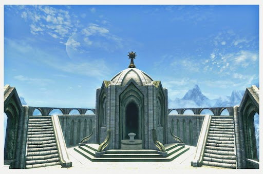
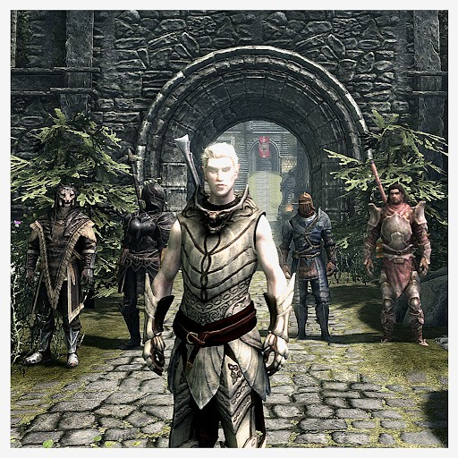

Skyrim is an open world role-playing game set in a fantasy world where a player can interact with npcs, start quests, and explore freely. it's one of my favorite games because of the story line, the many opprotunities for different adventures, and the fact that you are not forced to complete the game in a certain order.

The main quest in Skyrim leads your character on an adventure of discovery, skill building, dragon slaying, and puzzle solving. Ending with the defeat of an ancient evil dragon. I like the main quest because it gives the game a solid storyline and a clear purpose while still allowing a player to step away and come back.
You never know where a side quest will take you. Many side quests have unique characters, moral choices, and unexpected outcomes. I enjoy the side quests because they add to the lore of the game. They also let a player explore the world without feeling rushed.
Skyrim offers activies outside of quests making the game more immersive. Players can recruit followers, get married, adopt children, build a home and decorate it, cook food, go fishing, explore the enviornment and so much more. These activites make the world feel more realistic. Allowing a player to slow down and enjoy the game.